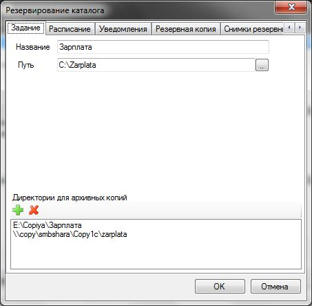
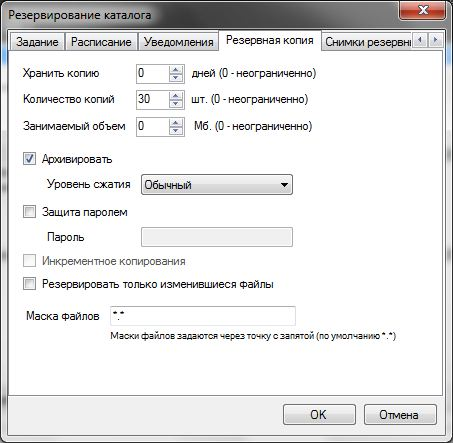

Резервирование каталогов файловой системы
Задания этого вида предназначены для резервного копирования выбранного каталога в указанные директории. Программа может просто скопировать выбранный каталог или запаковать его в архив.
При копировании новому каталогу(архиву) дается имя в следующем формате: <Название задания> <Дата> <Время> (<Название задания> <Дата> <Время>.zip)
Чтобы создать задание на резервирование каталога необходимо в главном меню программы выбрать Добавить — Резервирование каталога. Затем появиться окно, в котором необходимо ввести настройки для задания.

На вкладке Задание необходимо заполнить следующие поля:
Название
— наименование задания, используется при именовании созданных
резервных копий.
Путь — путь к резервируемому
каталогу;
Директории для архивных копий
— список директорий, в которые будут
помещаться созданных архивные копии каталога.
На вкладке Резервная копия можно задать следующие опции:

Хранить копию
(дней) — указывает количество дней, в течении которых
нужно хранить резервную копию. По истечении этого времени копия
удаляется. Значение 0 — неограниченно количество
дней.
Количество копий (шт.) - хранимое количество
резервных копий. Если количество превышает эту величину, то
удаляются самые старые копии. Значение 0 — неограниченное
количество копий.
Занимаемый объем (Мб)
— указывает объем в мегабайтах,
занимаемый всеми резервными копиями данного задания. Если объем
превышает установленное значение, то удаляются самые старые копии.
Значение 0 — неограниченный объем.
Архивировать
— указывает, что резервную копию нужно
помещать в архив.
Уровень сжатия
— степень сжатия архива.
Инкрементное
копирование — копирование будет
производиться в одну директорию, копируются только те файлы которые
изменились с момента предыдущего копирования.
Резервировать
только изменившиеся файлы — указывается
на то, что копироваться (архивироваться) будут только те файлы,
изменившейся копии которых нет в ранее созданных копиях. Самая
первая копия будет включать все файлы, а последующие только
изменения в директории.
Маска файлов
— определяет маску копируемых файлов.
По-умолчанию, *.* - все
файлы.